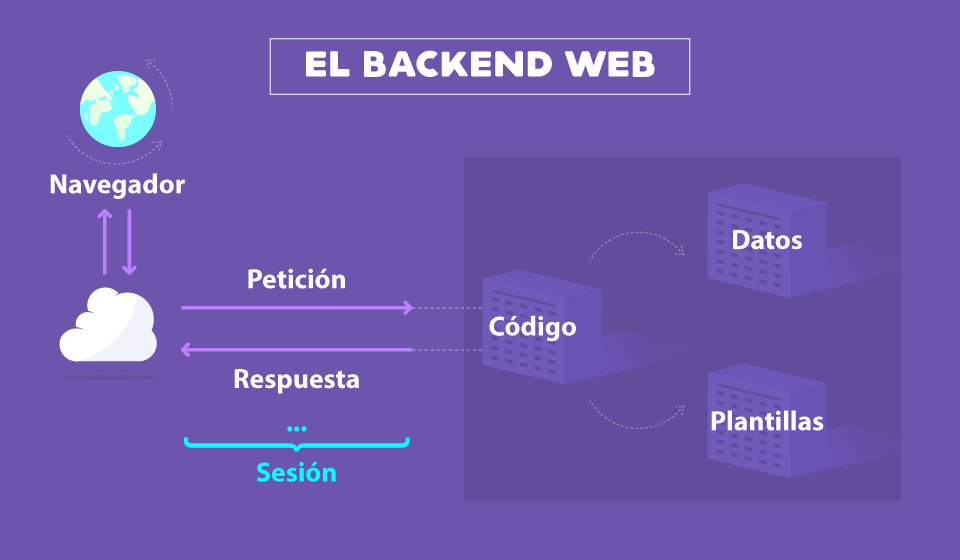

Saúl Sánchez de la Fuente
Saúl Sánchez de la FuenteSección Back-End
¿Qué es el Back-End?
Mientras que el frontend es la capa de programación ejecutada en el navegador del usuario, el backend procesa la información que alimentará el frontend de datos.
Es la capa de acceso a los datos, ya sea de un software o de un dispositivo en general, es la lógica tecnológica que hace que una página web funcione, lo que queda oculto a ojos del visitante.
El backend de una solución, determina qué tan bien se ejecutará la aplicación y qué experiencia, positiva o negativa, obtendrá el usuario de su uso.
Trabajar en este apartado supone algo totalmente diferente al frontend, ya que exige el dominio de otros términos de programación, lenguajes que requieren una lógica, ya que esta área es también la encargada de optimizar recursos, de la seguridad de un sitio y otros factores.
¿Cuáles son los roles del Back-End?
- -Backend Developer
- -Database Administrator
- -Administrador del Servidor
¿Cuál es la función de cada uno de los roles del Back-End?
- -Backend Developer
- -Database Administrator
- -Administrador del Servidor
Hace toda la lógica del lado del servidor, toda la seguridad está en esta parte; si tú haces seguridad en el lado del cliente, una persona con relativos conocimientos de programación podría modificar esa validación desde el inspector del navegador, por eso también se agrega validación del lado del servidor y es muchísimo más segura. El programador Backend también se encarga de comunicarse con las bases de datos, para recuperar la información que luego se le enviará al Frontend.
Se encarga de Diseñar las bases datos, que son grandes almacenes de información, supongamos que en tenemos 50,000 suscriptores y necesitamos guardar sus datos (nombre, apellidos, cuándo fue la última vez que iniciaron sesión, que cursos ven, etc.). En una aplicación la data es fundamental porque a partir de los datos se toman las decisiones, y una base de datos bien diseñada permite que un proyecto sea escalable, por eso el DBA diseña la base de datos (incluso el lápiz y papel) antes de ponerse a escribir código. Si un proyecto crece y la base de datos está mal diseñada, habrá que cambiar muchas cosas, arrastrando en el proceso al Frontend y al Backend, terminando en un caos total. Así como el front end y el web designer se pueden juntar en un solo rol, en proyectos pequeños también suele hacerse lo mismo con el back end y el DBA, pero lo ideal es que estén separados.
Analiza el proyecto para definir los requerimientos de hardware e infraestructura que se van a necesitar para que este pueda funcionar en producción, por ejemplo: Un proyecto que va a tener 10 usuarios al día no requiere mucha máquina, pero en un proyecto gigante él arquitecto sabrá qué requerimientos necesita (base de datos, almacenamiento, balanceamiento de carga, certificados ssl, etc.), él arquitecto cloud diseña e implementa toda la infraestructura en cloud y luego se encarga de mandar el proyecto a producción.
¿Cuáles son los principales lenguajes de programación y frameworks del Back-End?
JavaScript Es uno de los lenguajes más populares de la última década. Permite a los desarrolladores crear frontend y backend con la misma sintaxis, lo cual reduce significativamente la carga de trabajo.
Python Se creó en 1991 y, desde entonces, se ha convertido en un gran lenguaje multipropósito. Proporciona un entorno de desarrollo backend muy limpio y sencillo. Según una encuesta de Stack Overflow realizada en 2020, este fue el tercer lenguaje de programación más querido por los desarrolladores.
Ruby Este lenguaje de programación fue desarrollado en 1990 por un experto en programación japonés. Lo mejor de este lenguaje es que tiene una sintaxis similar a Python y Java. No solo esto, sino que permite grandes capacidades de automatización. Es la razón por la que plataformas como Airbnb y Etsy lo utilizan con fines de automatización.
¿Qué es un Stack?
Un programador Full Stack es un perfil híbrido entre el desarrollador Front End y Back End.
Es un experto con conocimientos en diseño web, lenguajes de programación, base de datos, servidores, API’s y Sistemas de Control de Versiones.
Un desarrollador Full-Stack no necesariamente domina todas las tecnologías. Sin embargo, se espera que el profesional trabaje tanto del lado cliente como el del servidor y entienda lo que sucede al desarrollar una aplicación. Él o ella deben tener un interés genuino en todas las tecnologías de software.